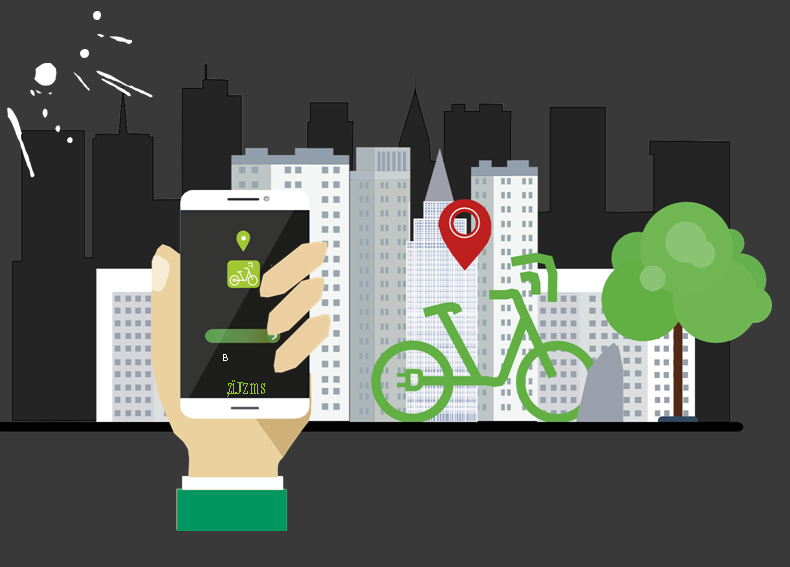

Ce projet qui consiste à mettre en place 100 Vélos électriques et normales en location dans différentes stations dans les principaux quartiers de la capitale de Tunis permettant aux gens de se déplacer en toute liberté et de découvrir la ville à n’importe quel moment tout en évitant les embouteillages et en préservant la nature par l’utilisation d’un moyen de transport électrique: Moderne, Facile, Pratique et Sur
